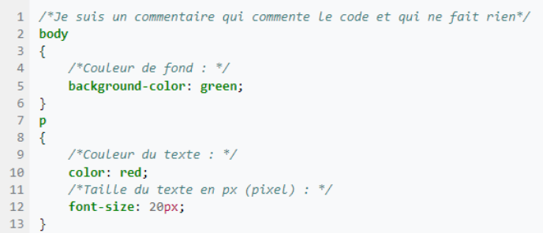

CSS vient de l'anglais Cascading Style Sheets (feuilles de style en cascade)
est un langage informatique qu'on utilise pour appliquer du style à un document HTML
Introduit au milieu des années 1990, CSS devient couramment utilisé dans la conception de sites web et bien pris en charge par les navigateurs web dans les années 2000.
La « cascade » est la combinaison de différentes sources de styles appliqués à un même document, selon leur degré respectif de priorité.
Différents modes de cascade peuvent se combiner :
par origine des styles, issus de l'agent utilisateur, de l'auteur et de l'utilisateur. La priorité supérieure accordée aux styles de l'utilisateur est un des facteurs principaux de l'accessibilité des documents présentés à l'aide de CSS
par média : une feuille de style générique peut s'appliquer à plusieurs média de restitution (affichage à l'écran, impression, projection) et être combinée avec des feuilles propres à chaque média
selon l'architecture d'un ensemble de documents web : une feuille de style générique peut s'appliquer à la totalité des pages d'un site web, être combinée avec des feuilles propres à chaque rubrique de celui-ci, ainsi qu'avec des styles propres à telle ou telle page spécifique
selon l'architecture des feuilles elles-mêmes : une feuille de style externe au document peut être combinée à une feuille de style interne et à des styles appliqués directement à chaque élément qui le compose (styles « en ligne »). Une feuille de style peut également importer une ou plusieurs autres feuilles externes.
Dans un fichier CSS, les propriétés sont regroupées par blocs de règles, délimités par les accolades "{}".
Chaque bloc est précédé d'un sélecteur désignant les éléments structurels auxquels les propriétés concernées doivent être appliquées:

CSS : comment ça marche, en fait ?
Pour afficher un document, un navigateur doit combiner le contenu du document et les informations de mise en forme. Le traitement se fait en plusieurs phases que nous détaillons ci-dessous. Gardez à l'esprit que cette description est simplifiée, selon le modèle du navigateur, les étapes pourraient changer. Mais dans les grandes lignes, voilà ce qui se passe :
Le navigateur charge le HTML (par exemple, il le reçoit à travers le réseau).
Il traduit le HTML en un DOM (Document Object Model) : une représentation du document HTML stockable en mémoire sur votre ordinateur. Nous expliquons le DOM plus en détails dans la prochaine section.
Le navigateur récupère ensuite la plupart des ressources attachées au document HTML, telles les images, les vidéos ajoutées à la page… et la feuille CSS externe ! JavaScript est traité un peu plus tard et nous n'en parlerons pas ici pour simplifier la présentation.
Le navigateur parse le CSS, classe les différentes règles par types de sélecteur (par exemple, élément, classe, ID, etc.) dans des « buckets ». En fonction des sélecteurs trouvés, le navigateur calcule quelle règle s'applique à quel nœud du DOM. Chaque nœud du DOM ciblé par CSS est étiqueté par sa règle de style. L'arbre ainsi obtenu s'appelle l'arbre de rendu (render tree).
Pour chaque nœud de l'arbre de rendu, le navigateur calcule l'effet visuel de la règle CSS associée.
Le visuel ainsi produit est affiché à l'écran (cette étape s'appelle « painting »).
Le diagramme suivant propose une vue synthétique de ce traitement.
Voici une vidéo explicative pour commencer à faire du CSS !